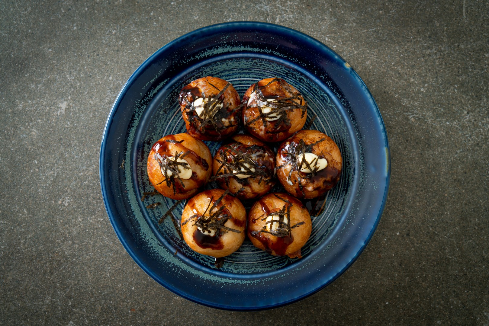
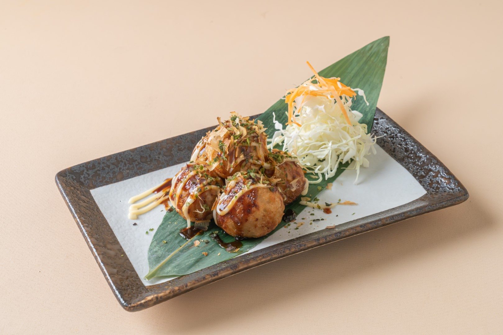
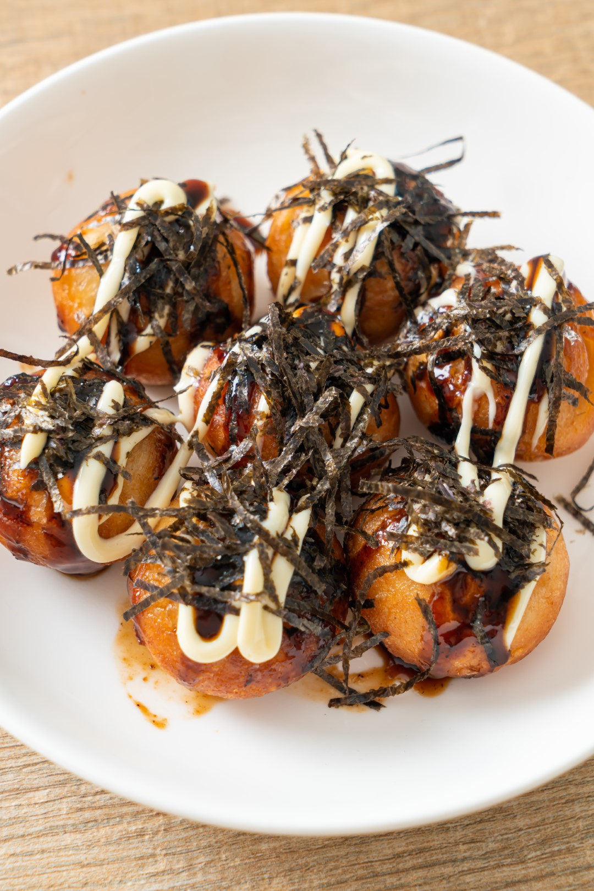
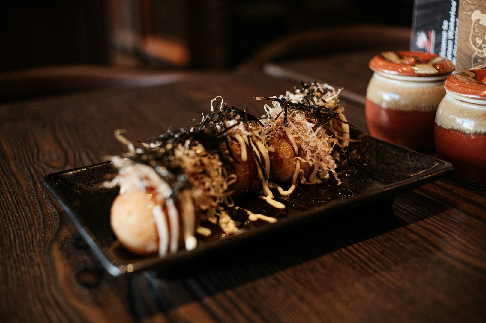
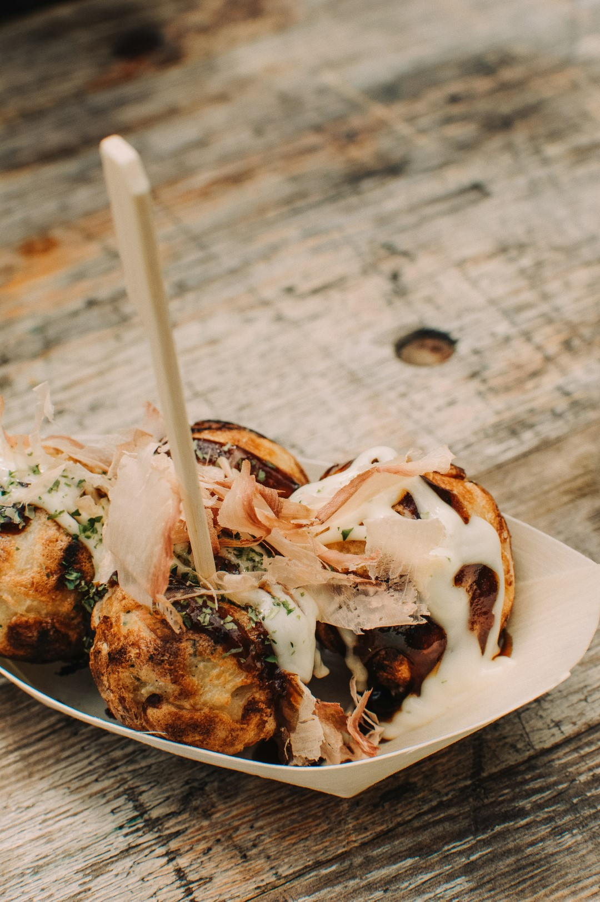
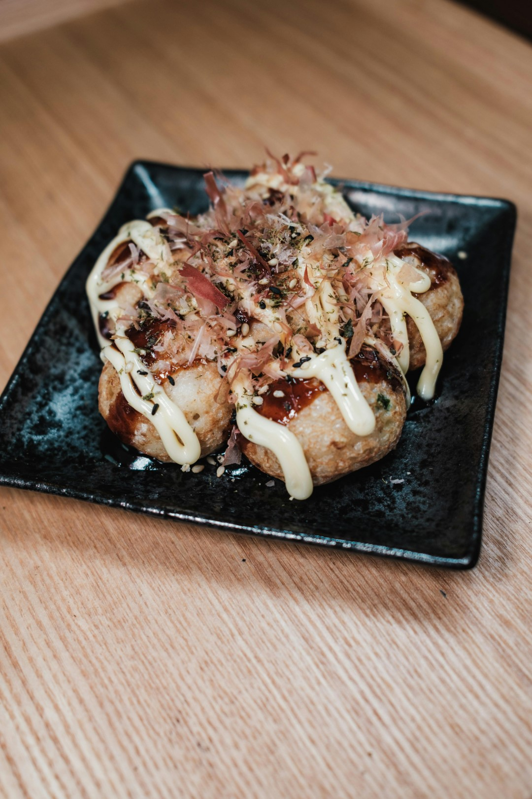

Tentang Kami
Kami Satoru Takoyaki, UMKM kuliner lokal yang menghadirkan cita rasa khas Jepang dengan sentuhan rasa Indonesia.
Dimulai dari gerobak kecil di depan rumah, kini Satoru Takoyaki terus berkembang dan jadi favorit banyak pelanggan.
Kami percaya, takoyaki bukan cuma makanan ringan, tapi juga pengalaman hangat yang bisa dinikmati bareng teman dan keluarga.

Gallery





Apa Kata Pelanggan?
"Takoyaki di sini enak banget! Gurih dan toppingnya melimpah."
- Andi, Mahasiswa
"Pelayanan ramah, harga bersahabat. Pasti langganan terus!"
- Siti, Pelajar
"Anak-anak suka banget yang keju, selalu repeat order."